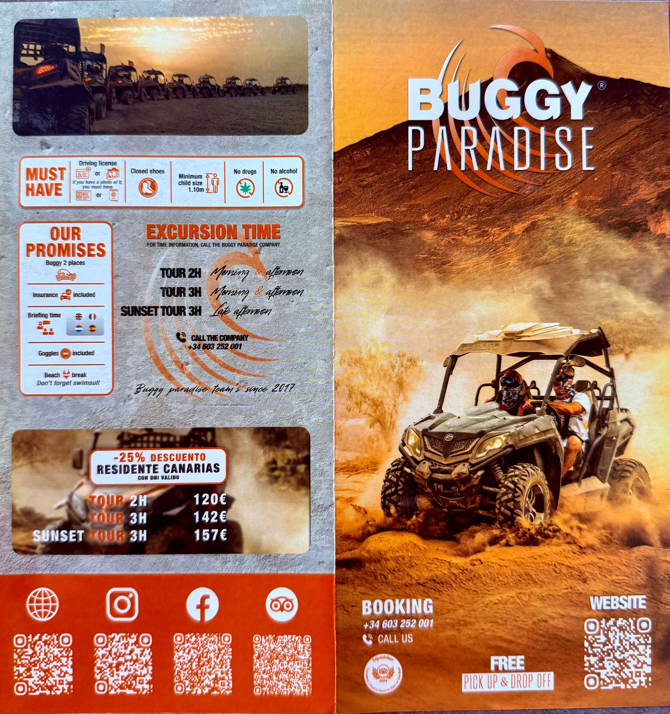
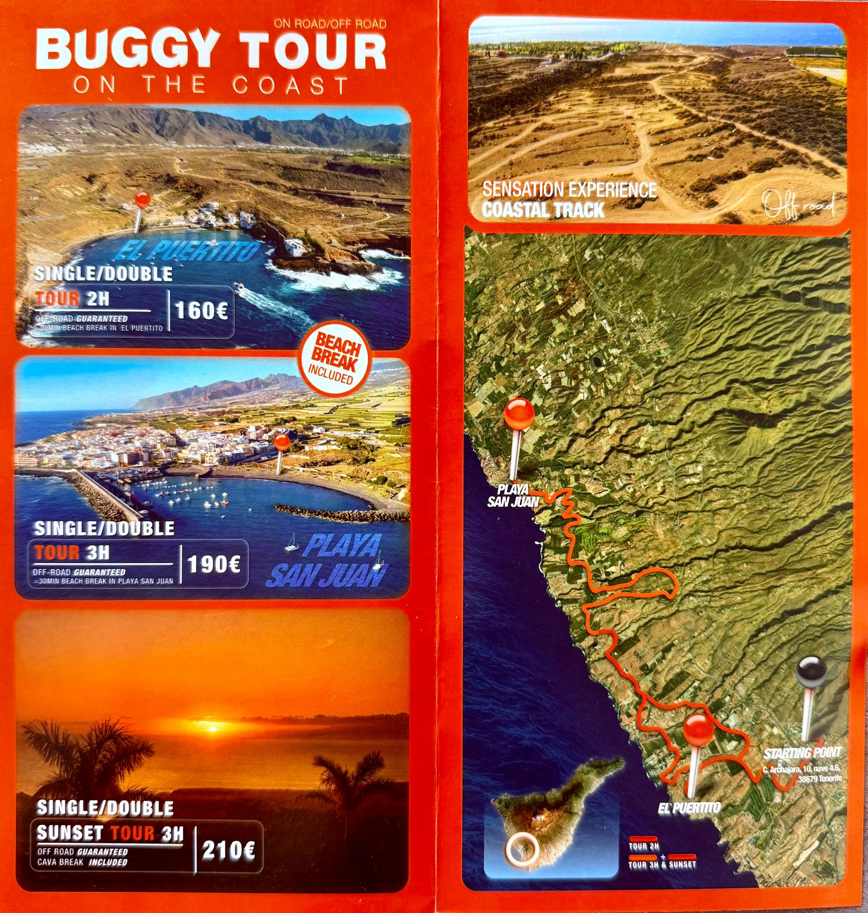
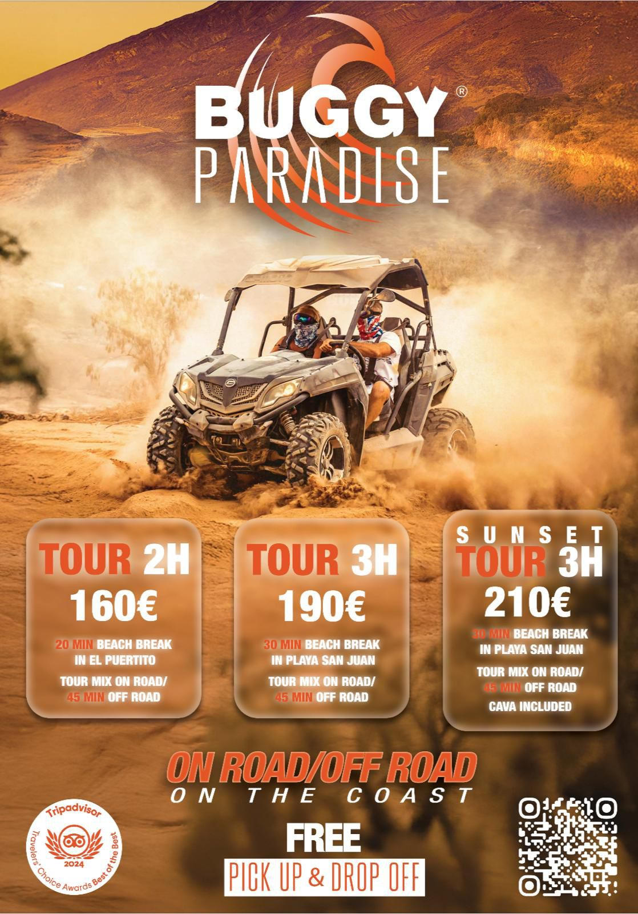

Vivi Tenerife in modo attivo e diverso con un'esperienza in buggy 2 posti tra costa, paesaggi vulcanici e scorci panoramici del sud dell'isola. Un'attività pensata per chi cerca avventura, libertà e divertimento, con il giusto equilibrio tra guida, scoperta del territorio e soste nei punti più suggestivi.
L'esperienza inizia con un briefing introduttivo e si svolge con mezzi preparati per offrire una guida sicura e coinvolgente. Durante il percorso si attraversano zone costiere e strade panoramiche, con tappe che possono includere luoghi come El Puertito e Playa San Juan, oltre a una versione speciale sunset pensata per godersi la luce del tramonto sull'oceano.
Buggy Paradise presenta l'attività con forte focus su sicurezza e divertimento, con guide esperte e mezzi mantenuti per garantire un'esperienza fluida e adrenalinica.


Contattaci per disponibilità e orari
💬 Contattaci su WhatsApp